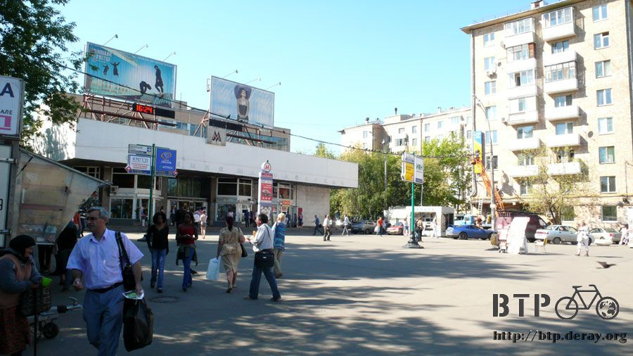
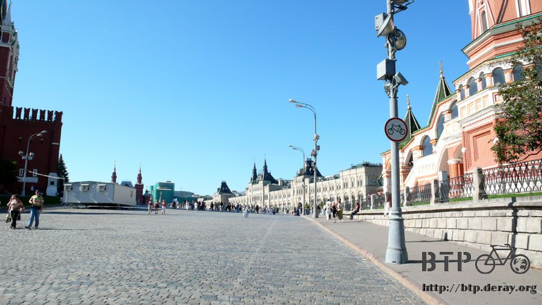

腳上這一雙鞋～帥呀！
昨天莫斯科下超級大雷雨，路上淹大水、馬路大塞車，今天則是萬里無雲的好天氣，把握時間到市區閒晃。
出發前先將電腦拿到MSI的辦公室去，他們要幫我加RAM，因為料件不夠、申請又要等，就直接拆別台電腦的RAM給我用。
這樣以後寫遊記同時開照片處理軟體和網頁編輯軟體就不會頓得讓我想自殺。
昨天吃飯的時候遇到中央社的記者張大哥，他在莫斯科待了十年的時間，最近兩年才比較開放的莫斯科，十年前真難想像是什麼樣的社會。
總之，他送給我一份中英文版的莫斯科觀光手冊，就是今明兩天騎車閒晃的主要指南，有地圖在手上就不怕迷路了。
今天騎車的裝備很簡單，相機、地圖、太陽眼鏡和小多，就這麼簡單，腳上穿得依然是藍白拖，新鞋子還沒有空去買。
很久沒有騎著空車的小多出來閒晃，卸下重擔之後變得非常輕盈，一下子很難適應這麼輕巧的小多，轉彎變得搖搖晃晃，三分鐘後習慣就好了。
先從住的地方這個地鐵站當作出發點，前天剛到莫斯科的時候就是在這邊餵鴿子，等MSI的人把我撿回去。
宿舍的位置離熱鬧的市區非常近，地處中間位置，交通非常便利，只需要過一條河就可以到紅場。

莫斯科可以看到很多列寧的雕像，一些共產國家如哈薩克，較大的城市中列寧也是一定會有的精神象徵，不知道他作了什麼偉大的事跡？
人已經死了，是非功過由後人去評斷，一代新人換舊人，威武銅像的下方是玩著滑板的少年～
市區道路規劃得很不錯，馬路大條的就寬得驚人，但走著走著就會變成了小路，還蠻常塞車的。
路邊沒有停車格，因為隨處都可以停車，任何地方，只要你敢停，那就沒問題，也不用繳停車費。
這座城市有一條蜿蜒的河流經過，將城市分為南北兩側，這感覺跟蘭州或是巴黎很像，只是流經的河不一樣，在中國是黃河；法國是塞納河。
河畔的人行步道規劃得沒有很大條，也沒有種植很多垂柳或是景觀植物，河水顏色稍嫌混濁土黃了些。
但河面上居然有美麗的噴水池，在烈日下噴散著水花，背著陽光還能看見美麗的彩虹。
有河的城市橋樑是不可少的，莫斯科也是，大大小小的橋樑數也數不清。
有些只供行人通行，這座橋正被封閉起來，架設打光板和攝影機，不知道在拍攝什麼？
即使橋樑已經這麼多了，但依然還在蓋更多的橋，河水會混濁不清跟這些工程多少有點關係吧。
沿著河邊的人行道騎車，過了一座橋之後就可以看見紅色的圍牆，這裡就是鼎鼎大名的紅場。
紅場是一個廣場，包含了許多有名的建築物，很多我根本搞不清楚是什麼，只覺得很漂亮。
從南方進入紅場，第一個會看見得是這座俄羅斯風格的教堂：瓦西里大教堂。
正想要好好進去參觀一下，就發現入口掛了禁行自行車的標示，本來以為是參考用的，但是看裡面好一會，真的沒人騎自行車。
禁止騎車但是不禁止牽車吧？

牽著小多走進去紅場，眼睛所能看到的地方全都是觀光客還有警察，莫斯科的警察數量很多，路邊、遊覽景點，隨處可見。
他們看著我牽車進入紅場，沒有阻止我，更加深了我的信心，穿著藍白拖在紅場裡邁步前進。
回頭換個角度看這座美麗的教堂，顏色鮮豔看起來像是新蓋的一樣，事實上它已經是一棟將近五百年歷史的建築了。

廣場的地上鋪設的是大塊石頭的路面，走路很舒服，騎車就會坑坑洞洞的，寬闊的廣場有好多的遊客，擺著各式各樣的姿勢拍照。
這座正方形立體的建築物，一開始只覺得跟四周華麗的建築相比之下顯得很低調。
經驗法則：越是低調表示它越有份量，果然之後查資料才知道這個就是列寧的墳墓。
小多～在禁止自行車的標示阻擋之下，你是少數能進入紅場的自行車，這一刻值得紀念一下～
(手把上掛著的是GPS記錄器，拿在手上太麻煩了。)
這邊人真的很多，但是一點也不擁擠，廣場實在太大了，走路走到累的妹妹讓哥哥抱著逛。
太陽蠻大的，路邊的小販生意都很好，吃冰淇淋跟喝汽水的人看得我很羨慕，好加在出發前有帶一瓶水。
警察雖然很多，但是不知道他們都在幹嘛，三三兩兩聚在一起聊天，並沒有在值什麼勤務。
有一個真實的笑話：如果在莫斯科開車被警察攔下來，有兩種可能：你違規了或是那個警察正好缺錢用。
像我這樣光明正大穿拖鞋牽著自行車走也沒事，拉著小推車在紅場邊就做起生意的小販也不會被趕走。
半圓形的藝術品，頂上有一個雕像，圓環的四周寫著1～24的數字，還畫了許多的符號。
公園種植許多漂亮的花卉，這個時節來觀光很漂亮，色彩繽紛的花讓紅場增添許多自然的美。
小型的圓弧藝術品還會噴水，炎炎夏日看起來很清爽，很多遊客也會沾些水來涼快一下。
另外一棟不知名的建築，在門口有女子樂儀隊，打鼓、耍槍很吸引遊客的目光，在這裡有很多隻布玩偶會找人合照，不知道要不要收錢。
莫斯科什麼東西都要錢，連打諮詢電話去問事情，幾天之後還會收到電話費的帳單，相當有趣而且不可思議。
走在河畔，很多照片當下覺得很漂亮，快門就按個不停，沒想到接下來還得寫文字來介紹這些照片>"<
真是非常頭大，我很想只寫『哇～』、『太壯觀了～』、『真漂亮～』但是大概會被說敷衍了事。
所以請自己欣賞這些照片，有熟悉俄羅斯的人可以幫忙講解一下照片的內容。
像這樣子約會真的非常陽光，一對情侶在綠地上正對河畔寫生，相當有純樸戀愛的感覺，草地的另一邊是四肢交纏在一起的另一對，約會方式比較火辣的。
這是他們素描時所畫的景色，寬闊的河景、旁邊矗立一座至少是十層樓高的雕像，一艘船、上面有一個人拿著金色的地圖。
雕像是深綠色，跟一般的青銅雕像氧化後的顏色一樣，但是手上拿的地圖卻是金色的，莫非是純金打造？
俄羅斯是陸權國家，多年以前首都設在聖彼得堡，一個靠海的大城市，將首都設立在外圍，野心很明顯，企圖吃下北歐的國家，可惜最後失敗了。
莫斯科很久以前只是一個農村，慢慢地擴張、規模越來越大，就變成如今的樣子，但聖彼得堡從一開始規劃就表現出首都的氣勢，聽說那邊很美～
河水不是很清澈，不知道裡頭有沒有魚，野鴨之類的倒是很常看到。

這艘船應該是河面的清潔船，打撈垃圾用的，要維持一條河流的乾淨真不是一件容易的事情，尤其是被污染之後。
回想當初台灣花多少心力想恢復淡水河的清潔，可惜還是沒能如願，沿岸的工廠實在太多了；高雄的愛河能有如今的樣貌也是費盡千辛萬苦，要好好愛惜。
離開河畔區往市區走，公園、圓頂型的教堂、博物館這些建築物都是隨處可見，大多都可以讓自行車進入，但有些要買票才能進去@@"
另一對戀人，在掛著名畫的露天文藝走廊攬腰跳舞，很令人羨慕的愛情呢～
這個東西放在公園入口的階梯處，低頭一看、會心一笑，這是讓行動不方便的人可以推著輪椅上階梯用的。
一般都會製作成斜坡的樣子比較好推，像這樣用兩個小鐵軌應該要很有技巧才能上得去吧？無論如何這也是無障礙空間的實行。
附帶一提，在莫斯科幾乎沒有禁菸的地方，餐廳、車站、百貨公司，到處都可以抽菸。
這座公園要買票才能進去，透過欄杆看裡頭，漂亮的噴泉演出動人的水舞秀，還有摩天輪可以搭，從高空俯望這座城市不知道是什麼樣的景像。
公園外面販賣的布娃娃，跟一般常見的迪士尼系列完全不一樣喔，都是沒見過的新面孔，看起來比較新鮮，也都很可愛。
除了布娃娃之外也有彈性十足的海膽球，顏色鮮艷造型可愛，小朋友看到這個都為之瘋狂，作家長的只好掏出錢來滿足小孩的童年。
我也好想買一個當禮物，但是出門的時候只帶了四十塊盧布，想說要是被警察勒索的話錢就全部給他也沒關係，結果什麼也買不起。
路邊攤的規劃很先進，攤販就像店家一樣，乾淨而整潔，周遭也不會髒亂，一個小桌子能讓客人站著吃，內用跟外帶的食物包裝是不一樣的。
賣的東西有熱狗、漢堡、煎餅這些速食。
沿路看人家吃吃喝喝讓我很餓，光是喝水解不了嘴饞，真幸運看到街邊有個老伯伯在賣帶殼的花生米。
用一個玻璃罐當容器，裝滿之後倒進袋子裡，這樣只需要十塊盧布的超低價，二話不說就買了一袋。
味道還算不錯～香香脆脆的，邊騎車邊吃帶殼花生還需要一點技巧，記得花生殼不要沿路亂丟，莫斯科的路面都很乾淨。
莫斯科的地鐵自1930年興建至今，有很長的歷史了，在古早時代就已經有地下化的大眾運輸工具。
而且它的使用率是世界排行第二名，僅次於紐約地鐵，除了物價比歐洲高，連地鐵也比歐洲還要會跑。
票價規則很單純，買票的時候看你要買幾次進出，一次就是十七盧布，十次的話比較便宜，平均下來只要十四盧布。
不論要搭幾站都無所謂，一進一出通通是單一票價，莫斯科的地鐵非常複雜，依顏色區分共有十一條線路，四通八達的地鐵再由一個環狀線串連起來。
這一張是莫斯科的地圖，今天我跑了這麼多的地方，但只在紅圈圈的部分裡打轉，只佔了莫斯科的一個小部分而已。
明天還有一整天的時間可以在市區好好轉一轉，想試著去搭地鐵感受一下當地人的生活，參觀一些博物館～好期待呀 :D
晚上九點的時候MSI的大家帶我去吃晚餐，雖然工作還沒忙完，明天大家要去義大利開會，事情好像多到做不完，但是肚子餓到不行了 ，先吃飯再繼續努力。
Kevin開車載大夥進入市區，趁著百貨公司打烊之前去運動用品店挑新的鞋子，本來打算穿拖鞋騎到巴黎，但是MSI堅持要買一雙新鞋子送我。
如此的貼心照顧實在很不好意思，白吃、白喝、白住，連鞋子都用公司的費用買了一雙，大恩大德有機會再回報。
看著琳瑯滿目的鞋子有點難下決定，除了新鞋之外也有這種髒髒的復古鞋，價錢打對折，我的鞋子該不會被拿去賣了吧T_T
只花了三分鐘就買到了滿意的鞋子，這一雙實在很好看，是Shufei挑的，第一眼見到的時候就決定要買了。
搞定鞋子的事之後就是大餐時間啦，昨天吃了日式料理、韓國料理，今天則是中國料理。
味道很不錯，服務生是中國人，那廚師應該也是中國來的，才能煮出這麼道地的風味。
食物好吃，但是價錢很驚人，光是一碗白飯就要六十五塊台幣，一杯柳橙汁要兩百六十台幣。
這一盤宮保雞丁在中國騎車的時候偶爾會點來吃，那時候價錢很便宜，折合台幣大概四十塊就可以吃到，現在這一盤要價多少錢我就不敢講了~_~
明天大家要去出差，吃飽飯後還得繼續去辦公事，外派在莫斯科的大家都沒時間像我這麼悠哉地參觀市區。
跟MSI的大家拍張照作紀念，第一張有點失敗，因為我太高了，後面的人都被我擋住，原來我真的很高@@"
那蹲下來再拍一張，謝謝這三天MSI的熱情照顧，我很感動T_T。
繼續閱讀：8.9 BTP上身 勇氣倍增
俄羅斯-盧布－ 1：1.3 台幣
8.8 |
總計：10元 |
路邊的花生小販10元 |
|